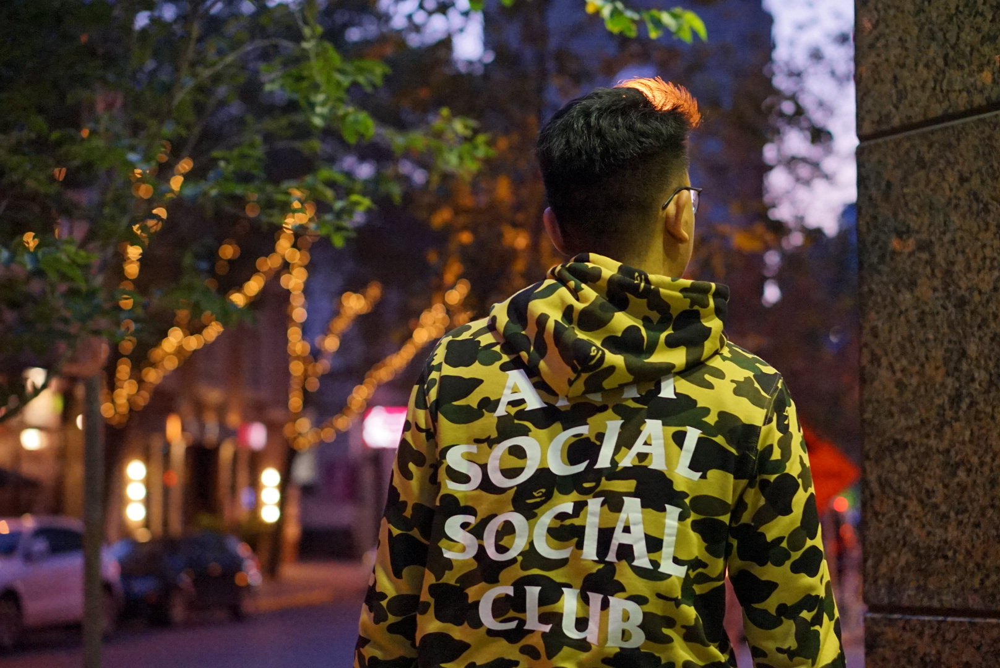
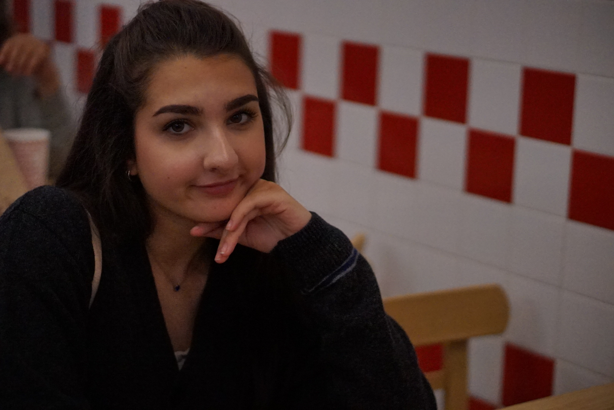

Hello!
I am currently a second year student at both University of Waterloo and Wilfrid Laurier University. I am currently studying Mathematics at Waterloo and Business Administration at Laurier.
I have always been a creative person and hopefully this website will always become a place where I can post my hobbies and interests! You can read more about it in the Blog section.
Below are some of my work! I love capturing candid moments and generally prefer portraits over any other type of photography styles.
 